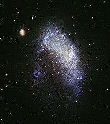

Una galaxia irregular es una galaxia que no encaja en ninguna clasificación de galaxias de la secuencia de Hubble. Son galaxias sin forma espiral ni elíptica.
Hay dos tipos de galaxias irregulares. Una galaxia Irr-I (Irr I) es una galaxia irregular que muestra alguna estructura pero no lo suficiente para encuadrarla claramente en la clasificación de la secuencia de Hubble. Una galaxia Irr-II (Irr II) es una galaxia irregular que no muestra ninguna estructura que pueda encuadrarla en la secuencia de Hubble.
Las galaxias enanas irregulares suelen etiquetarse como dI. Algunas galaxias irregulares son pequeñas galaxias espirales distorsionadas por la gravedad de un vecino mucho mayor.

Del total de galaxias observadas hasta la fecha solo un 4.7 % de las galaxias brillantes reciben el nombre de galaxia irregular.